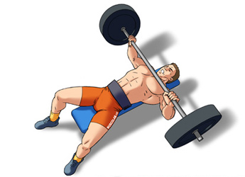

La panca piana
Assetto scapolare
Impariamo il giusto assetto scapolare per evitare infortunei
- braccia apertura a 90 gradi
- avvicinare la scapole
- creare un arco dorsale
- settare i piedi solidi a terra
Come farlo?
- sistemare le braccia ai cerchi da 81
- comprimere scapole settandoti
- arcarti facendo un ponte
- spingere con le gambe sul terreno